Author: Hippolyte Le Carreres
Affiliation: Vrije Universiteit Amsterdam
Description: A collection of audio data and experimental results for the research paper "Foundmusic: Leveraging DSP Audio Descriptors for Granular Synthesis".
For inquiries, please contact: h.lecarreres@vu.nl
Metro Amsterdam Weesperplein
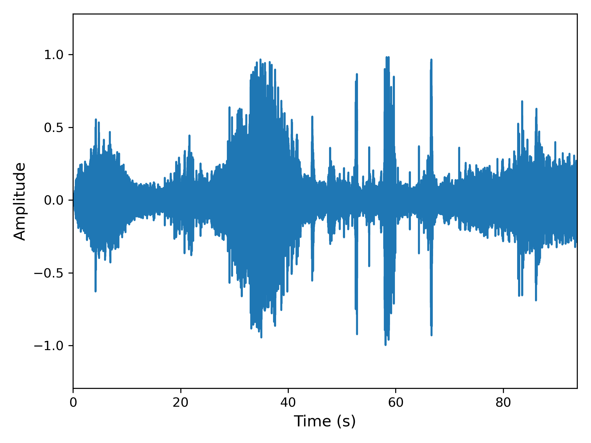
2 ms Grain
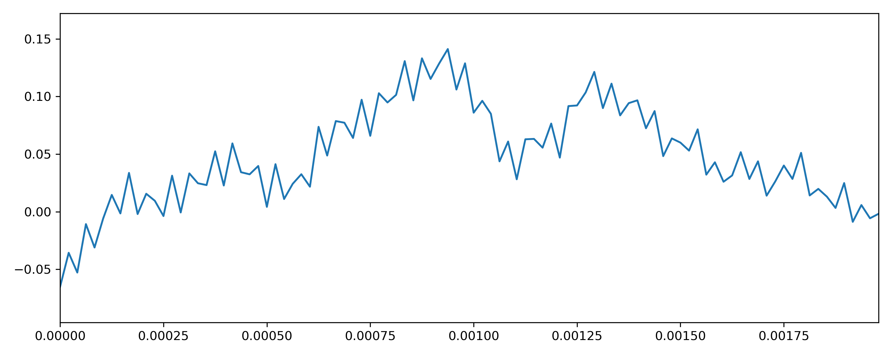
40 ms Grain
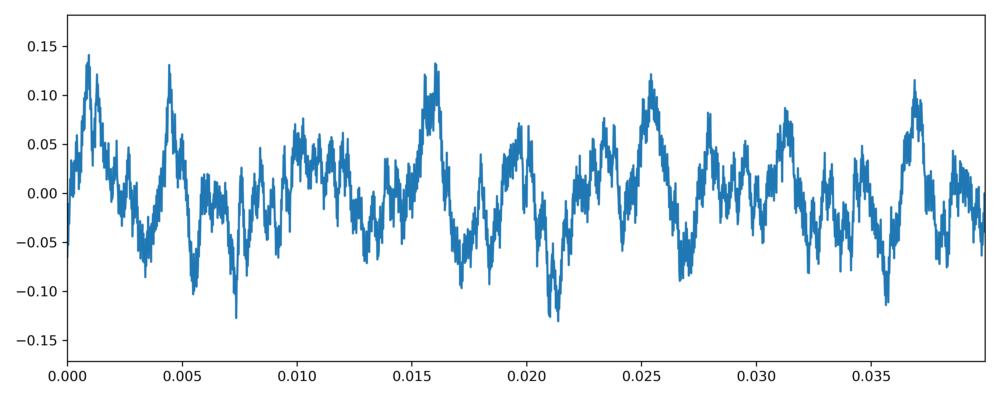
100 ms Grain
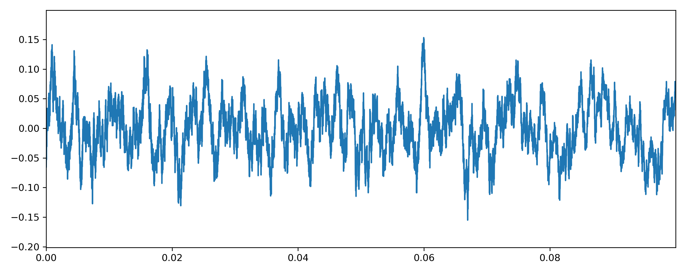
100 ms Amplitude Envelope
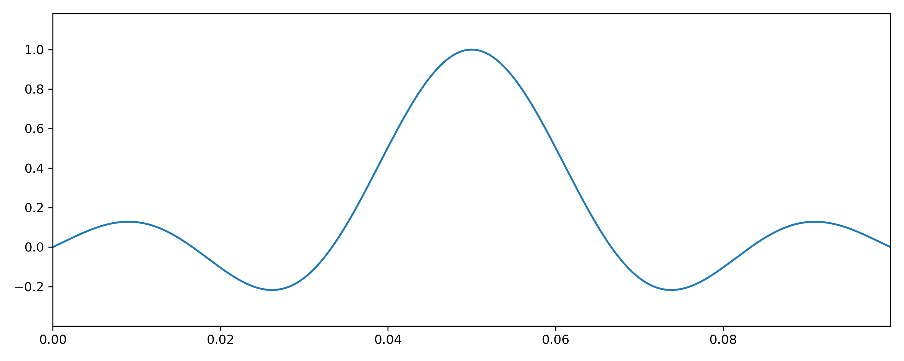
100 ms Enveloped Grain
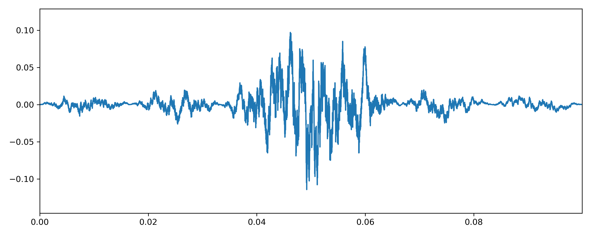
Foundmusic Output (Markov Group)
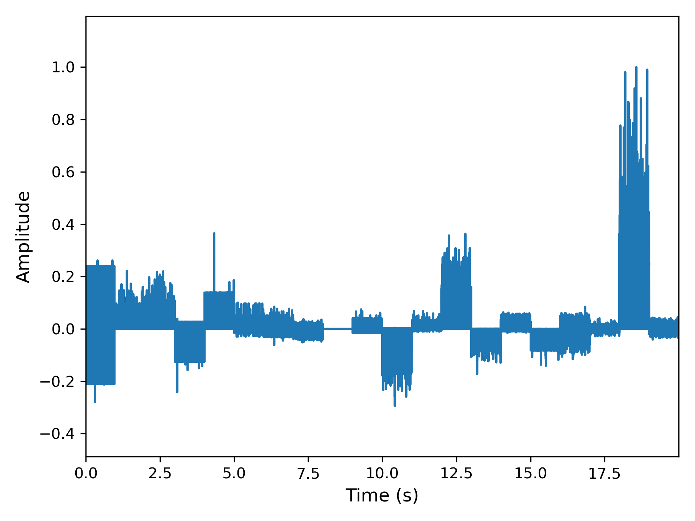
Foundmusic Output (State Group)
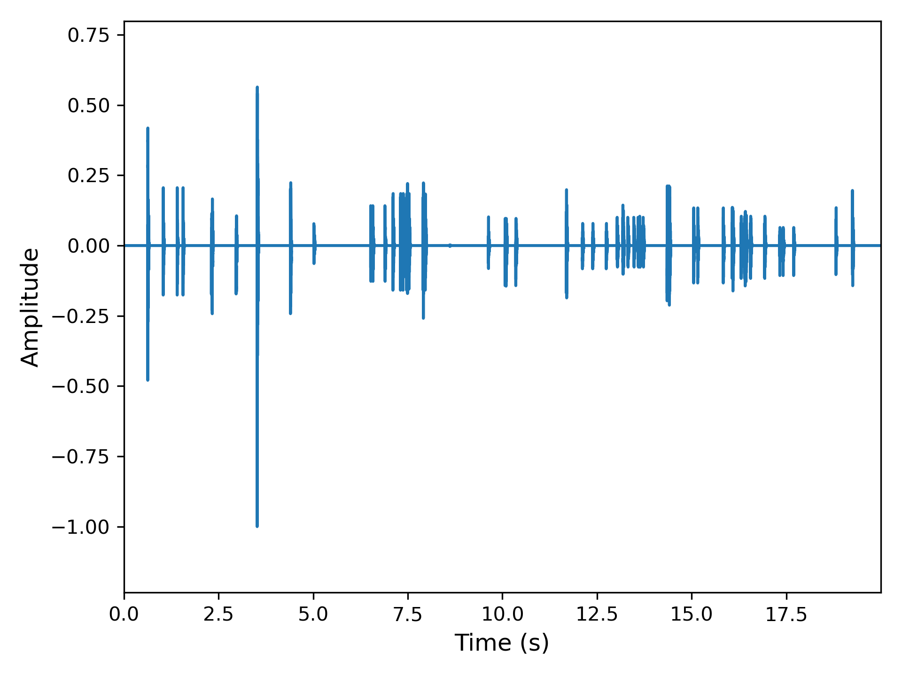
Foundmusic Output (GS Group)
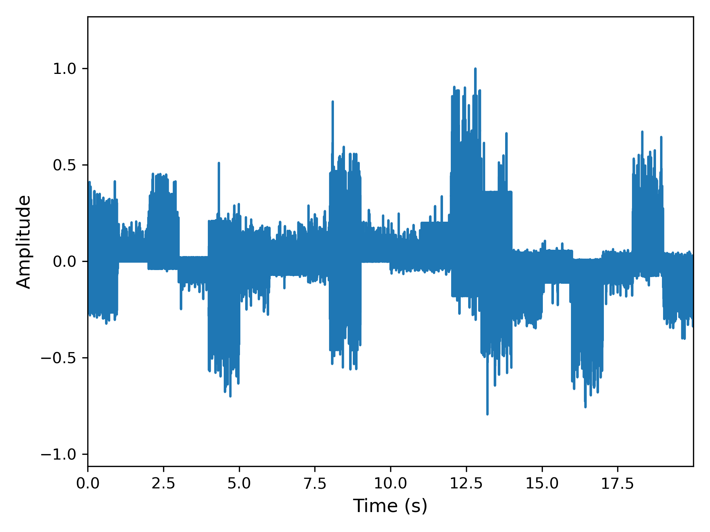
Foundmusic Output (Baseline)
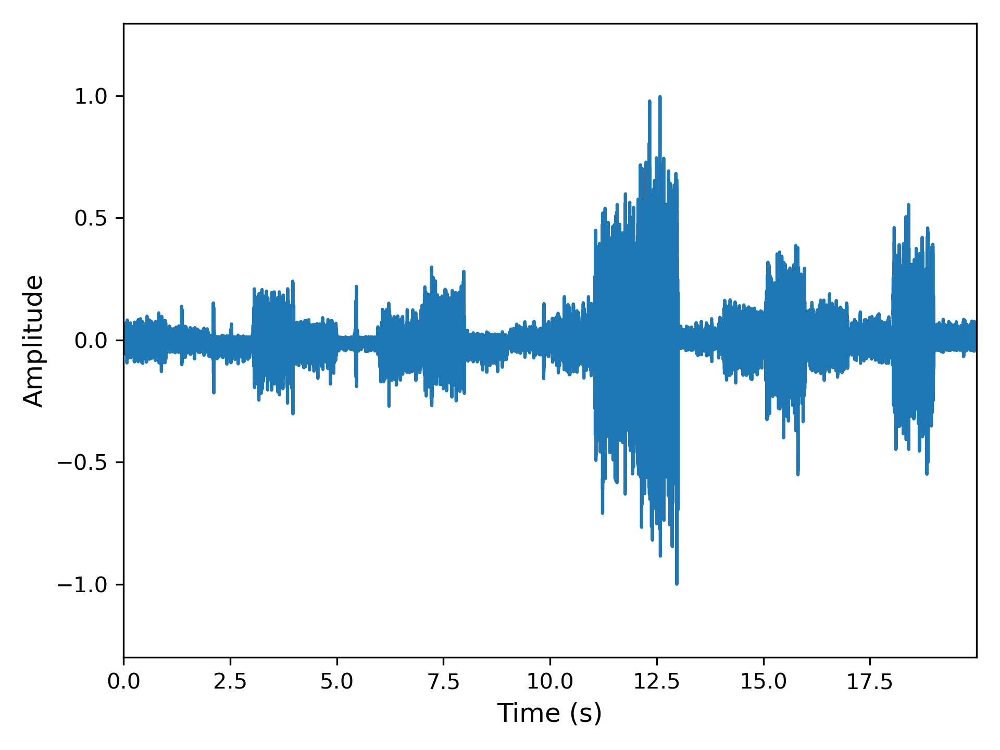
Foundmusic Output (Baseline)
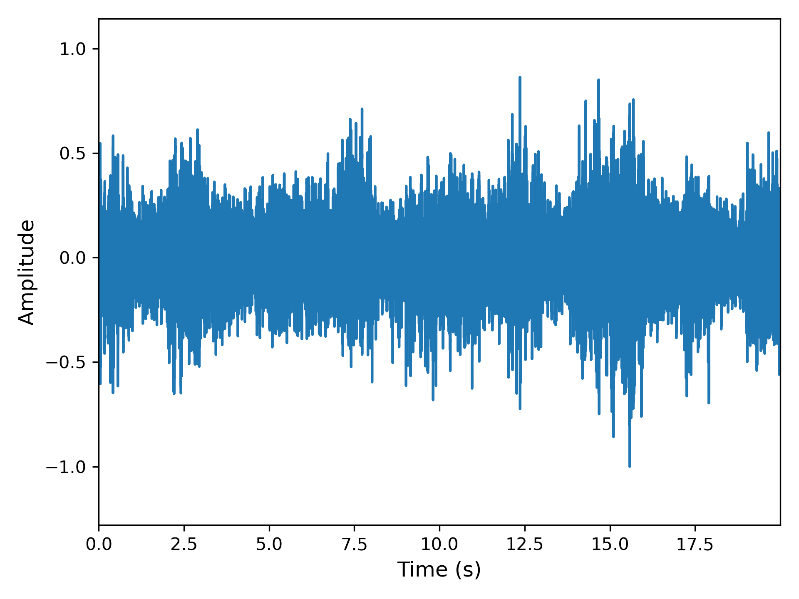
Foundmusic Output (Baseline)
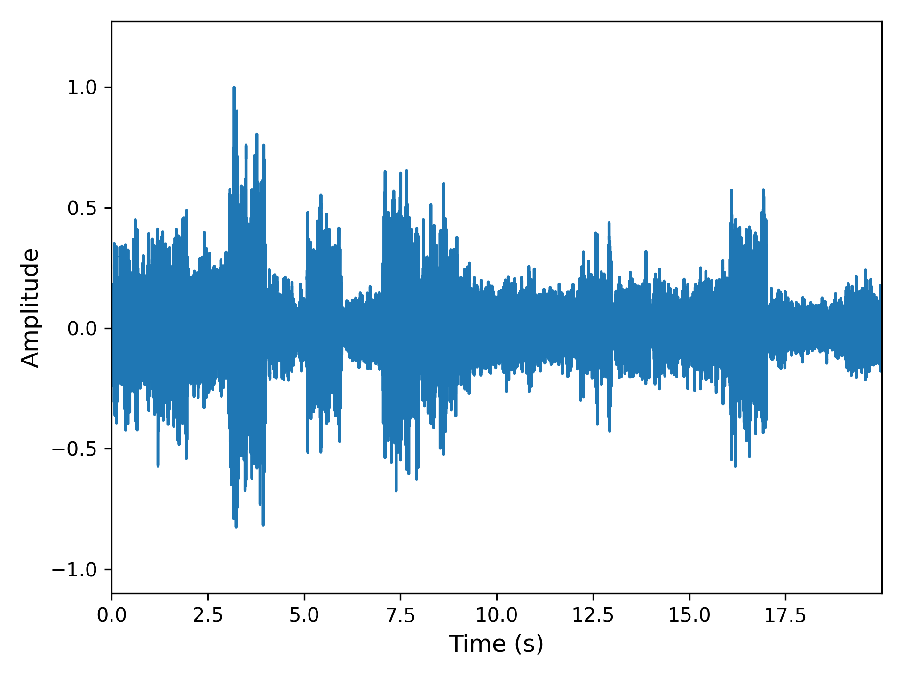